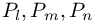

Simulate with complex geometries and complex physics
%GEO_Tube%
reorient a part of the geometry in the tube sense
Reorientation of tube-like or topologically closed parts of the boundary.
The geometry part should topologically be connected, i.e. triangles share the same nodes in order to provide geometrical connectivity.
The inside/outside orientation definition is given by the following infinitessimal movement approach:
begin_boundary_elements{}
include{FileName}, ..., reorientation{ %GEO_Tube%, %GEO_Inside%, OPTIONAL:RatioForInternalParts }
include{FileName}, ..., reorientation{ %GEO_Tube%, %GEO_Outside%, OPTIONAL:RatioForInternalParts }
end_boundary_elements
- Define the normal direction of the i-th triangle formed by the points  by
where the area of the triangle is
- Define an infinitessimal displacement of the j-th node point by
- The geometry is oriented to the inside, if
\sum\limits_i^{\text{all triangles}} \tilde{A}_i." class="latex" border="0">
- RatioForInternalParts: If the geometry is a closed chamber (such as a tank) that contains internal parts,
then these parts will be oriented in the opposite direction. This is only the case if these parts fulfill the following criterion:
\sum\limits_i^{\substack{\text{all triangles of}\\ \text{internal part}}} A_i" class="latex" border="0">
| List of members: | |
|---|---|
| %GEO_Inside% | reorient (parts of) geometry towards its inside |
| %GEO_Outside% | reorient (parts of) geometry towards its outside |